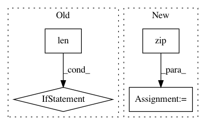

1a6d4020c53e2b39e224616481528fad901cbd4e,deeppavlov/core/commands/infer.py,,interact_model,#Any#,95
Before Change
if args[-1] == "exit" or args[-1] == "stop" or args[-1] == "quit" or args[-1] == "q":
return
if len(args) == 1:
pred = model(args)
else:
pred = model([args])
print(">>", *pred)
def predict_on_stream(config_path: str, batch_size: int = 1, file_path: Optional[str] = None) -> None:
After Change
pred = model(*args)
if len(model.out_params) > 1:
pred = zip(*pred)
print(">>", *pred)
In pattern: SUPERPATTERN
Frequency: 4
Non-data size: 4
Instances
Project Name: deepmipt/DeepPavlov
Commit Name: 1a6d4020c53e2b39e224616481528fad901cbd4e
Time: 2018-10-15
Author: yoptar@gmail.com
File Name: deeppavlov/core/commands/infer.py
Class Name:
Method Name: interact_model
Project Name: keras-team/keras
Commit Name: 94dbc3042f5a85b399f5ce2859d4e8fbafd235b9
Time: 2017-07-06
Author: me@taehoonlee.com
File Name: tests/keras/backend/backend_test.py
Class Name:
Method Name: check_single_tensor_operation
Project Name: keras-team/keras
Commit Name: 94dbc3042f5a85b399f5ce2859d4e8fbafd235b9
Time: 2017-07-06
Author: me@taehoonlee.com
File Name: tests/keras/backend/backend_test.py
Class Name:
Method Name: check_two_tensor_operation
Project Name: keras-team/keras
Commit Name: 65e4f94e45f32d9cbe99337d74ed9c1ebad3412a
Time: 2015-06-03
Author: jason.ramapuram@viasat.com
File Name: keras/layers/core.py
Class Name: AutoEncoder
Method Name: get_output